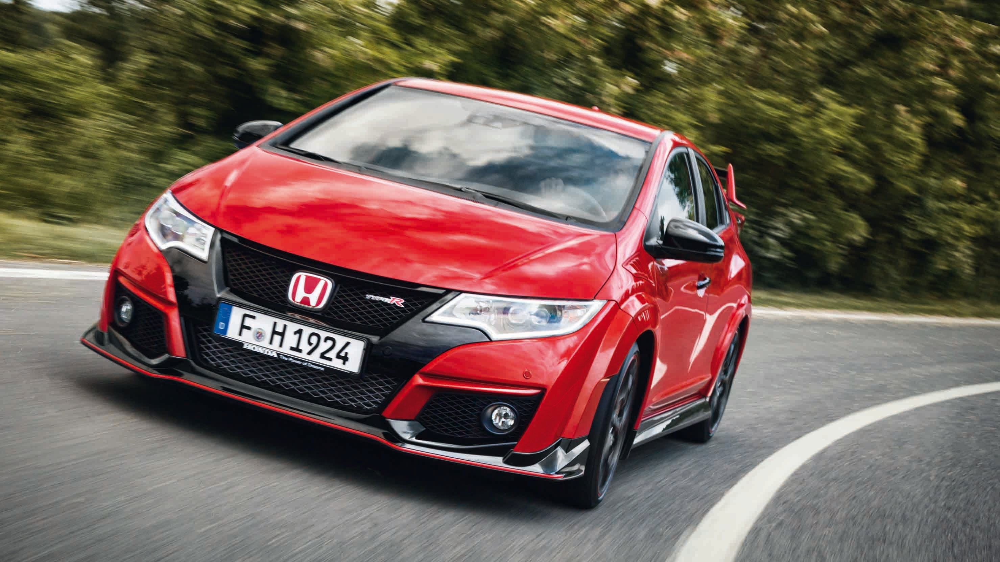
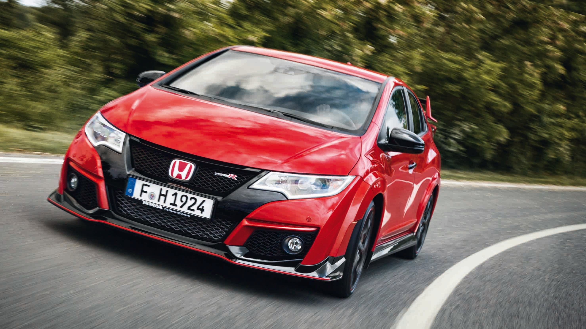

The design of Type R models was originally focused on race conditions, with an emphasis on minimizing weight, and maximizing performance potential (e.g. engine tuning, suspension set-up).Thus, Type R models were first conceived for racetracks. However, due to Honda's increased focus on their highly regarded VTEC engines, Type R vehicles were eventually designed for a much wider market.
 

| The NSX Type R |
| The Integra Type R |
| The Civic Type R |
Honda produced a very limited number of NSX Type R models from 1992 to 1995 for Japan. Major changes include a more aggressive suspension and an
extensive weight reduction to 1230 kg from the normal NSX weight of 1350 kg.
The NSX Type R was track oriented and, to reduce weight, lacked sound deadening, audio, electric windows and air conditioning. The NSX Type R's role
was fulfilled by the NSX Type S Zero in 1997.
TYPES OF NSX
In 1995, Honda introduced their first Integra Type R to the Japanese Domestic Market (JDM). The Type R would have numerous differences vs. other Integra models that incrementally added to the overall performance of the vehicle. The engine, transmission, body, suspension, brakes and interior were all revised in comparison to other Integra models. The Type R was equipped with a 1.8-liter DOHC VTEC in-line 4-cylinder (B18C) engine. The JDM Type R engine produced 200 PS @ 8,000 rpm . The US Type R would produce 195 HP at 8,000 rpm and 130 lbs./ft. of torque at 5,700 rpm. JDM and other international markets came with 11:1 compression ratio while the US Integra Type R had 10.6:1 compression. There were numerous differences between the Type R engine and the DOHC VTEC engine available in other Integra models (GS-R) but the increased power was primarily due to the higher compression, larger throttle body, high lift camshafts and high-volume exhaust manifold. The Type R came only with a close-ratio 5-speed manual transmission. First gear and the final drive were identical to the GS-R transmission but gears 2-5 were spaced much closer. In addition, the Type R came equipped with a Helical limited-slip differential. In 1998, the JDM Type R and other international markets would receive a revised final drive ratio of 4.785 while the US Type R only had a 4.40 final drive ratio. The focus of the Type R was to minimize weight while enhancing rigidity. The Type R has larger strut tower bars, rear performance rods on the rear frame and numerous body reinforcements. The Type R had revised springs and dampers as well as larger sway bars. The Type R has 5 lug (standard Integra’s have 4 lugs) 15 x 6 aluminum wheels wrapped in Bridgestone Potenza RE010 195/55R15 tires. Larger rotors and calipers were included and the ABS system was revised as well. The 1998 JDM Type R would receive 16” alloy wheels wrapped in 215/45/ZR16 tires.
The 1997 EK9 Civic was third to be given the Type R badge. Based on the EK4 SiR chassis it featured a Type R prepared B16B engine producing 185 PS (182 hp),
stiffer chassis, upgraded sway bars and strut bars, Recaro alcantara seats, 15-inch alloy wheels and a large boot spoiler. Since then, most generations have
offered a Type R variant. The first generation Type R version of the Civic was the only version not offered outside Japan.July 2015 saw the launch of the brand
new Honda Civic Type-R to the UK market, manufactured at their Swindon plant. The vehicle offers blistering performance in the form of an all-new, direct-injected
turbocharged 2.0 litre VTEC TURBO petrol engine boasting more than 276 bhp. The turbo-charged k20c1 engine being built in the United States at the Anna Engine
Plant in Anna, Ohio. This high-performance car can go from 0 - 60 mph in a staggering 5.7 seconds and has a top speed of 167 mph.
MODELS OF CIVIC TYPE R's |
||
|---|---|---|
| Generation | Type | Year |
| 1st Generation | EK9 | 1997-2000 |
| 2nd Generation | EP3 | 2001-2005 |
| 3rd Generation | FN2 | 2006-2011 |
| 4th Generation | FK2 | 2015-PRESENT |